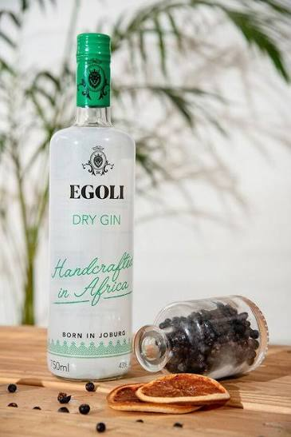

LIVE SYSTEM MODEL
OPERATIONS ADVISORY / WORKING MODEL
Find the constraint.
Unlock the flow.
Explore what limits fulfilled sales, then test the next operating decision.

Illustrative scenarioNot measured Egoli data
SCHEMATIC · NOT A TIMED SIMULATION
SYSTEM CAPACITY
One flow. Several limits.
Limiting supply stage Other stages│ Demand reference
WHAT IF?
Give bottling more capacity.
Change its good-output rate. Watch the constraint move through the system.
FOCUSING CYCLE
- Identify the limiting factor
- Improve its existing output
- Align the rest of the operation
- Add resources where justified
- Find the next constraint
BOTTLING SENSITIVITY
When does more capacity stop helping?
THE FOCUSING CYCLE, QUANTIFIED
Fix one limit. Meet the next.
Shows the order in which limits would take over, not what each lift costs or whether it is achievable. Use it to sequence investigation, then price the lifts that matter.
From customer order to collected cash
Proposed roles · timing unconfirmedStage 1 of 11
Click a stage to inspect the handoff↓ Physical / information flow↺ Cash funds the next cycle
Measure the waiting, not just the work.
At every handoff capture order / batch ID, quantity, ready time, accepted time, work start, work finish and delay reason. Inventory quantities and elapsed times are unconfirmed.
Build a feasible operating week
One product or validated fixed mixPROPOSAL SCALE CHECK
What bottling pace do the reported volumes imply?
Assumes the reported litres are finished-strength and all are bottled in one product format. If they are bulk litres or litres of pure alcohol, the bottle counts change. Confirm the basis before relying on any figure here.
Calculation methods and limits
CLIENT BASELINE
What we know. What we need to verify.
The proposal is a scoping source, not an audited production dataset. Demonstration values are separate from the reported claims below.
| Reported in the proposal | How this model treats it |
|---|---|
| 3,700 L/day median; 5,600 L/day peak | Reported only. Volume basis, stage attribution, calendar and measurement period unconfirmed. |
| 66% “current OEE”; 85% target | 3,700 / 5,600 is an output ratio. Availability, performance and quality components are needed to establish OEE. 85% remains a proposal assumption. |
| Bottling efficiency 51%; other stage percentages | Labelled indicative in the proposal. Percentages are not comparable weekly capacities. |
| 20% demand met; approximately 40% unmet demand | Definitions conflict. Use confirmed orders and a validated forecast by product and due date. |
| R3m dry goods; R7m broader requirement | Requirements / targets, not available cash. Excluded from revolving funds until confirmed. |
| R302 per litre of alcohol (VAT); “~R90 ex-works” per 750 ml bottle | 0.75 L × 40% × R302 = R90.60, so the R90 equals the per-bottle charge at that rate. Confirm whether it is a duty / cost component or a selling price before using it as margin. |
| “~380,000” and “+390K” additional litres per year; “22% gap” | (4,760 − 3,700) L/day × 365 = 386,900 L/yr, so the two figures differ and depend on the operating-day count. The 22% is the gap relative to 4,760; relative to 3,700 it is 29%. Reported only. |
CLIENT BRAND REFERENCES
Egoli, in its own visual language.
The Egoli emblem and product photography are supplied company assets. RM Industrial remains the advisory brand for this working model.
Product imagery is brand context, not evidence of current specifications, process performance or capacity. Calculator assumptions remain separately identified.
Source register
Egoli strategic consulting proposal v1.3
PDF pages 2–4 and 9. Company context, reported production claims and proposed interventions.
GIC786 Operations Management
Topics 2–7. Strategy, flow, constraints, capacity, inventory and scheduling.
GIBS Integrated Business Simulation 2025
Slides 29–39. Coordination of marketing, production, people, quality and finance. Simulation-company figures excluded.
Baseline capture checklist
- Orders, backlog and delivery dates by product
- Operating calendar and productive resource hours
- Batch routing, strength, yield and cycle times
- Compatible tank volumes and occupancy
- Good-output rates and release turnaround
- Material availability and replenishment timing
- Ring-fenced funds and net funding exposure